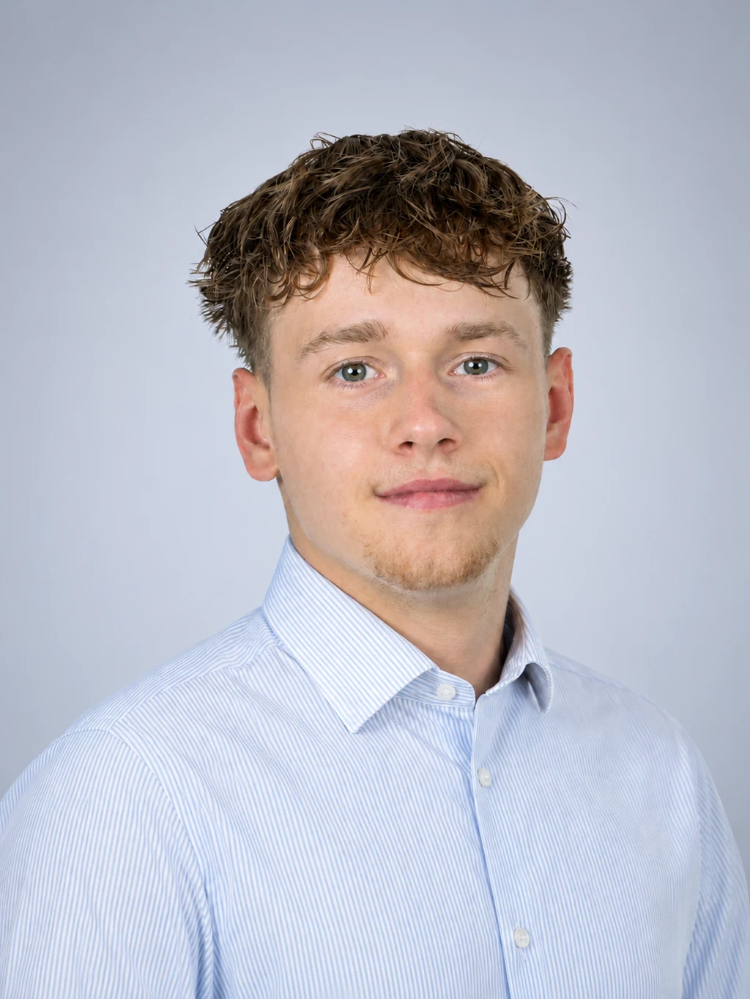

23. místo na kandidátce
Daniel Tonowski
student, florbalista
- Věk
- 19 let
- Část obce
- Lyžbice
- Politická příslušnost
- bez politické příslušnosti
- Navrhl
- nezávislý kandidát
- Číslo na hlasovacím lístku
- 7
01
Odkud jsem
Studoval jsem na Obchodní akademii v Českém Těšíně a sport mě provází celý život. Lidé mě mohou znát především z florbalu nebo jako fanouška různých sportů. Díky vlastní zkušenosti dobře vím, jak důležité je mít dostupné místo, kde mohou děti a mladí lidé pravidelně trénovat, setkávat se a smysluplně trávit volný čas.
02
Proč kandiduji
Kandiduji, protože chci do rozhodování města přinést pohled své generace. Mladí lidé by neměli být pouze skupinou, o které se mluví, ale také součástí debaty o tom, co v Třinci chybí a jaké podmínky potřebují pro aktivní život a rozvoj svého talentu.
03
Co chci prosadit
Chci, aby v Třinci sportovalo více lidí a aby se otevírala další sportoviště, zejména pro děti. Město by mělo vytvářet dostatek příležitostí k pohybu nejen pro organizované oddíly, ale také pro každého, kdo si chce zasportovat ve volném čase.